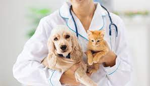

Contador
O contador é o profissional que cuida das questões financeiras, tributárias, respiratórias e patrimoniais de uma empresa. Em seu cotidiano, lida com planilhas, demonstrativos de resultados, contas a pagar e receber, guias de impostos e muitos números. É uma profissão que exige muita atenção e responsabilidade.
Engenharia
A Engenharia é a ciência, a arte e a profissão de adquirir e de aplicar os conhecimentos matemáticos, técnicos e científicos na criação, aperfeiçoamento e implementação de utilidades, tais como materiais, estruturas, máquinas, aparelhos, sistemas ou processos, que realizam uma determinada função ou objetivo
Medicina

A medicina trabalha com a manutenção e a restauração da saúde. Num sentido amplo, lida com a prevenção e cura das doenças humanas. O médico investiga a natureza e as causas das doenças. A função do médico é pesquisar as doenças e suas causas para posteriormente poder combatê-las e curá-las.
Professor
professor exerce diversas funções no processo educativo. Ele realiza diferentes tipos de atividades que buscam educar e ensinar uma pessoa ou grupo em Ciências, Artes, teorias e/ou técnicas específicas e outros tipos de conhecimentos.
Veterinaria

Realizar e interpretar resultados de exames clínicos de animais; patologias diagnósticas; prescrever tratamento; indicar medidas de proteção e prevenção; realizar sedação, anestesia e tranquilização de animais; realizar cirurgias e intervenções de odontologia veterinária ; colher material para exames laboratoriais
Alumos: Ana Julia Santos, Arthur Henrique e Isabella Godoi
Professor: Miderson 2 ano C